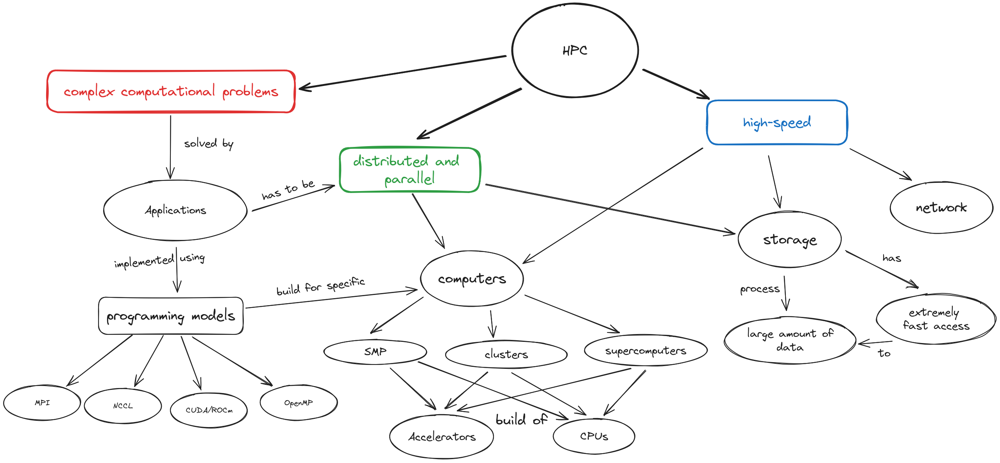

High-Performance Computing
The roots of HPC in modern science
In modern science there are 3 methodologies: (staviti sliku umjesto list)
Theory
Experimentation
Simulation
When experimentation is very difficult or even impossible, for example in observing the macromolecular motions, assessing the efficiency of new drugs or describing fission reactions, the simulation can help people to test and prove their theories. Moreover, the simulations can better direct the experimentation phase.
To keep pace with the scientific and industrial needs the simulations need to be more
accurateand finish in less time which requires greater computing powerSingle processors cannot deliver that power
Making processor with higher clock speed is expensive and impossible due to the heat/power limitations
Expensive to put hugh memory on a single processor
Solution
Parallel computing - split work into smaller pieces and divide it among numerous linked processors.
Challanges of parallel computing
Think of 3 possible challanges if you would have to split and process your work among several linked processors (computers).
What is HPC?
High Performance Computing (HPC) refers to the practice of utilizing very large computers (supercomputers, clusters) to perform computationally and memory intensive tasks at high speeds using parallel processing. HPC involves usage of advanced hardware and software to solve extremely complex problem that go beyond the capabilities of conventional computational systems.
{kind=link}

Overview of HPC